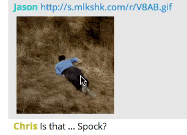

Special thanks to http://extensionizr.com/ Chrome extension template builder
Install
Go to chrome://extensions/ inside Google Chrome
Drag and Drop /bin/Kato-Gif-Hider.crx anywhere on the page
Hide Image
Click image to trigger message collapse
Hide all by Category
Hover over top left of page to open flyout
Click category to collapse messages of that type